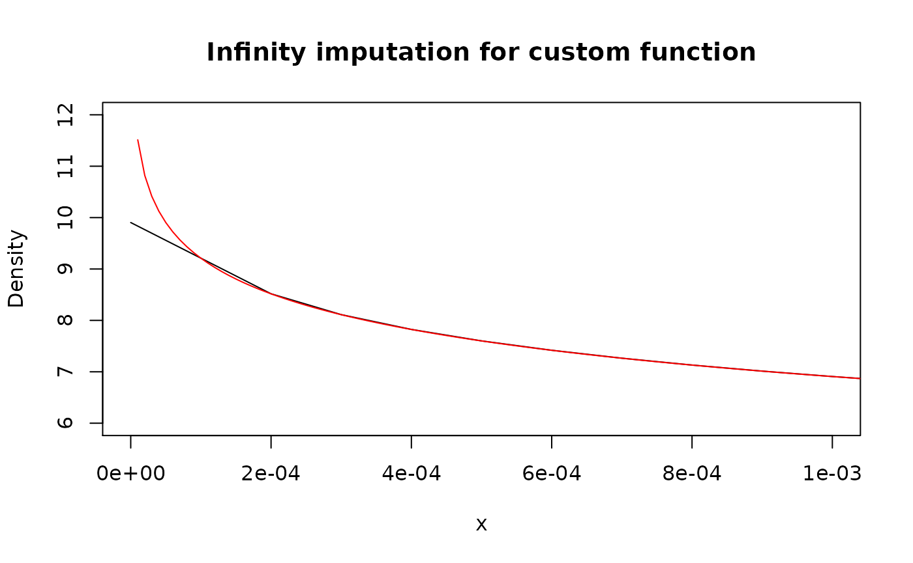

Family of as_*() functions should be used to convert existing distribution functions into desired class (“p”, “d”, “q”, or “r”). Roughly, this is a new_*() family but with function as an input.
There are two main use cases:
- Convert existing pdqr-functions to different type.
- Convert (create) pdqr-function based on some other user-supplied distribution function.
Existing pdqr-functions
Converting existing pdqr-function to desired type is done straightforwardly by changing function’s class without touching the underlying distribution (“x_tbl” metadata is the same):
d_fin <- new_d(1:4, "discrete")
meta_x_tbl(d_fin)
#> x prob cumprob
#> 1 1 0.25 0.25
#> 2 2 0.25 0.50
#> 3 3 0.25 0.75
#> 4 4 0.25 1.00
# This is equivalent to `new_p(1:4, "discrete")`
(p_fin <- as_p(d_fin))
#> Cumulative distribution function of discrete type
#> Support: [1, 4] (4 elements)
meta_x_tbl(p_fin)
#> x prob cumprob
#> 1 1 0.25 0.25
#> 2 2 0.25 0.50
#> 3 3 0.25 0.75
#> 4 4 0.25 1.00Other distribution functions
Another important use case for as_*() functions is to convert some other distribution functions to be pdqr-functions. Except small number of special cases, output of as_*() function will have “continuous” type. The reason is because identifying exact values of distribution in discrete case is very hard in this setup (when almost nothing is known about the input function). It is assumed that if user knows those values, some new_*() function with data frame input can be used to create arbitrary “discrete” pdqr-function.
General conversion algorithm is as follows:
- If user didn’t supply support, detect it using algorithms targeted for every pdqr class separately. If input function belongs to a certain set of “honored” distributions (currently, it is all common univariate distributions from ‘stats’ package), support is detected in predefined way.
- Using detected support, data frame input for corresponding
new_*()function is created which approximates input function. Approximation precision can be tweaked withn_grid(andn_sampleforas_r()) argument: bigger values lead to better approximation precision, but worse memory usage and evaluation speed (direct and ofsumm_*()functions).
Honored distributions
For input distribution function to be recognized as “honored”, it should be supplied directly with its original name:
# "Honored" distributions
as_d(dnorm)
#> Density function of continuous type
#> Support: ~[-4.75342, 4.75342] (10000 intervals)
# Underlying distribution doesn't depend on class ("p", "d", "q", "r").
# Following code has the same effect as `as_r(as_d(dnorm))`
as_r(rnorm)
#> Random generation function of continuous type
#> Support: ~[-4.75342, 4.75342] (10000 intervals)
# Different picewise-linear approximation precision is achieved with different
# `n_grid` argument value
as_d(dnorm, n_grid = 101)
#> Density function of continuous type
#> Support: ~[-4.75342, 4.75342] (100 intervals)
# Different extra arguments for input
as_d(dnorm, mean = 10, sd = 0.1)
#> Density function of continuous type
#> Support: ~[9.52466, 10.47534] (10000 intervals)
# Currently only five distributions result into "discrete" output of `as_*()`
as_d(dbinom, size = 10, prob = 0.3)
#> Probability mass function of discrete type
#> Support: [0, 10] (11 elements)
as_d(dgeom, prob = 0.3)
#> Probability mass function of discrete type
#> Support: [0, 38] (39 elements)
as_d(dhyper, m = 10, n = 10, k = 7)
#> Probability mass function of discrete type
#> Support: [0, 7] (8 elements)
as_d(dnbinom, size = 10, prob = 0.3)
#> Probability mass function of discrete type
#> Support: [0, 87] (88 elements)
as_d(dpois, lambda = 1)
#> Probability mass function of discrete type
#> Support: [0, 9] (10 elements)
# This isn't recognized as "honored", but output is very close to "honored"
as_d(function(x) {dnorm(x)})
#> Density function of continuous type
#> Support: ~[-5.75643, 5.34214] (10000 intervals)Support detection
Support detection is implemented for more smooth user experience. For more details on algorithms behind it, see section “Support detection” in as_p() documentation. Generally, if you know exactly what support should be, it is better to provide it.
my_d <- function(x) {ifelse(x >= -1 & x <= 1, 0.75 * (1 - x^2), 0)}
# With default support detection
as_d(my_d)
#> Density function of continuous type
#> Support: ~[-1.00002, 1.00002] (7338 intervals)
# Providing custom, maybe only partially known, support
as_d(my_d, support = c(-1, NA))
#> Density function of continuous type
#> Support: ~[-1, 1.00001] (9278 intervals)
as_d(my_d, support = c(NA, 1))
#> Density function of continuous type
#> Support: ~[-1.00018, 1] (7783 intervals)
as_d(my_d, support = c(-1, 1))
#> Density function of continuous type
#> Support: [-1, 1] (10000 intervals)Here is a comparison of support detection performance. One important note here is that algorithm has random nature in as_r() (which is reasonable because the only information available about distribution is its random generation function).
(p_norm <- as_p(function(x) {pnorm(x)}))
#> Cumulative distribution function of continuous type
#> Support: ~[-4.75343, 4.75342] (10000 intervals)
(d_norm <- as_d(function(x) {dnorm(x)}))
#> Density function of continuous type
#> Support: ~[-5.75643, 5.34214] (10000 intervals)
(q_norm <- as_q(function(x) {qnorm(x)}))
#> Quantile function of continuous type
#> Support: ~[-3.89971, 3.89971] (8204 intervals)
(r_norm <- as_r(function(x) {rnorm(x)}))
#> Random generation function of continuous type
#> Support: ~[-3.91006, 3.82021] (10000 intervals)
plot(
as_d(p_norm), col = "black",
main = "Comparison of `as_*()` functions support detection"
)
lines(d_norm, col = "blue")
lines(as_d(q_norm), col = "red")
lines(as_d(r_norm), col = "green")
Infinity imputation
If for some point density function goes to infinity, it is imputed linearly from its neighborhood. For not “honored” distribution functions, it can be more robust to use as_p() for initial conversion.
x_grid <- seq(0, 0.06, by = 1e-5)
# "Honored" distribution
plot(
as_d(dchisq, df = 1), col = "black",
xlim = c(0, 0.05), ylim = c(0, 20),
main = "Infinity imputation for Chi-squared distribution"
)
lines(x_grid, dchisq(x_grid, df = 1), col = "red")
# Custom function
plot(
as_d(function(x) {-log(x)}, support = c(0, 1)), col = "black",
xlim = c(0, 0.001), ylim = c(6, 12),
main = "Infinity imputation for custom function"
)
lines(x_grid, -log(x_grid), col = "red")
Approximation error
Note that output distribution is usually an approximation (albeit a reasonably good one) of input due to the following facts:
- Output density has piecewise-linear nature, which is almost never the case for input function.
- Possible infinite tails are removed to obtain finite support. Usually output support “loses” only around 1e-6 probability on each infinite tail.
- Possible infinite values of density are linearly approximated from neighborhood points.
‘pdqr’ provides a diagnostic function pdqr_approx_error() to look at the precision of approximation. It accepts a pdqr-function and original reference distribution function with its possible extra arguments. It constructs a grid that is more dense than “x” column in pdqr-function’s “x_tbl” metadata (to actually test the precision of piecewise-linear nature). Output is a data frame with rows corresponding to that grid elements and columns with two kinds of errors: “error” (with direct, signed error as difference between values of reference function and pdqr-function) and “abserror” (with absolute error):
approx_err <- pdqr_approx_error(as_d(dnorm, sd = 2), dnorm, sd = 2)
head(approx_err)
#> grid error abserror
#> 1 -9.506849 -4.948351e-12 4.948351e-12
#> 2 -9.506658 -7.126907e-12 7.126907e-12
#> 3 -9.506468 -8.822366e-12 8.822366e-12
#> 4 -9.506278 -1.003453e-11 1.003453e-11
#> 5 -9.506088 -1.076320e-11 1.076320e-11
#> 6 -9.505898 -1.100818e-11 1.100818e-11
summary(approx_err)
#> grid error abserror
#> Min. :-9.507 Min. :-3.989e-07 Min. :4.900e-12
#> 1st Qu.:-4.753 1st Qu.:-2.000e-07 1st Qu.:9.874e-10
#> Median : 0.000 Median :-2.776e-08 Median :2.776e-08
#> Mean : 0.000 Mean :-1.052e-07 Mean :1.052e-07
#> 3rd Qu.: 4.753 3rd Qu.:-9.874e-10 3rd Qu.:2.000e-07
#> Max. : 9.507 Max. :-4.900e-12 Max. :3.989e-07Here are estimation of median and maximum errors for most common “honored” distributions using default n_grid value (tested for d-functions, but can be used also for p- and q-functions):
abserror_stat <- function(f, ref_f, ...) {
approx_err <- pdqr_approx_error(f, ref_f, ...)
c(
median_abserror = median(approx_err[["abserror"]]),
max_abserror = max(approx_err[["abserror"]])
)
}
abserror_stat_fin <- function(f, ref_f, grid, ...) {
abserror <- abs(f(grid) - ref_f(grid, ...))
c(median_abserror = median(abserror), max_abserror = max(abserror))
}
# Normal
abserror_stat(as_d(dnorm), dnorm)
#> median_abserror max_abserror
#> 5.551817e-08 7.978876e-07
# Beta
abserror_stat(
as_d(dbeta, shape1 = 10, shape2 = 20), dbeta, shape1 = 10, shape2 = 20
)
#> median_abserror max_abserror
#> 1.270044e-06 9.263838e-06
# By default, `pdqr_approx_error()` removes infinity errors. As one can see,
# when density goes to infinity, error can be quite big
abserror_stat(
as_d(dbeta, shape1 = 0.1, shape2 = 0.2), dbeta, shape1 = 0.1, shape2 = 0.2
)
#> median_abserror max_abserror
#> 0.108998 1630.863871
# Exponential
abserror_stat(as_d(dexp, rate = 10), dexp, rate = 10)
#> median_abserror max_abserror
#> 9.953929e-09 1.078784e-05
# Student
abserror_stat(as_d(dt, df = 5), dt, df = 5)
#> median_abserror max_abserror
#> 2.984622e-11 7.626976e-07
# Cauchy. Heavy tails also affect approximation error
abserror_stat(as_d(dcauchy), dcauchy)
#> median_abserror max_abserror
#> 2.518228e-08 6.378956e-04
# Poisson. Pdqr-function isn't exact because of tail trimming.
abserror_stat_fin(as_d(dpois, lambda = 10), dpois, grid = 0:30, lambda = 10)
#> median_abserror max_abserror
#> 9.757657e-09 5.134715e-07
# For some distributions functions are exact
# Uniform
abserror_stat(as_d(dunif), dunif)
#> median_abserror max_abserror
#> 0 0
# Binomial
abserror_stat_fin(
as_d(dbinom, size = 10, prob = 0.1), dbinom, grid = 0:10,
size = 10, prob = 0.1
)
#> median_abserror max_abserror
#> 0 0